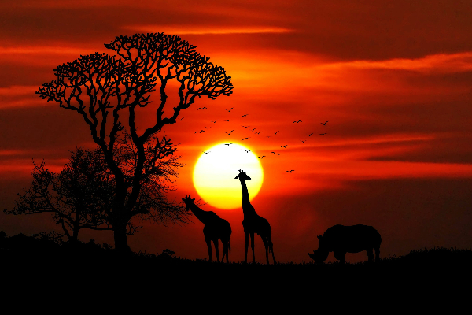
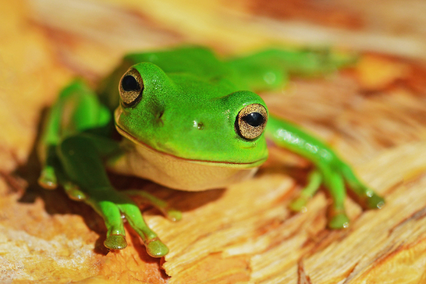
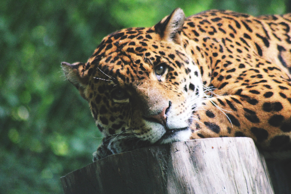
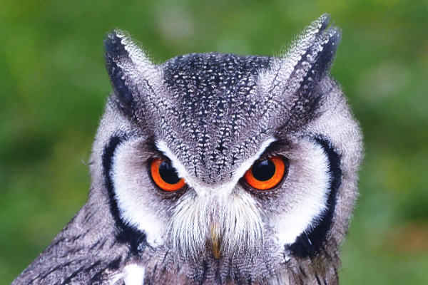
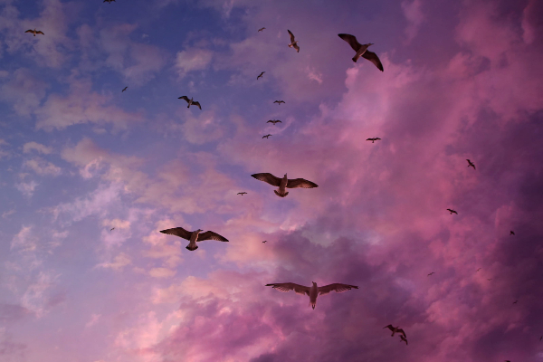
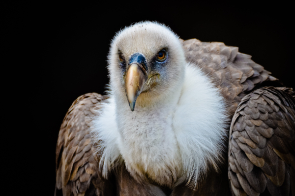
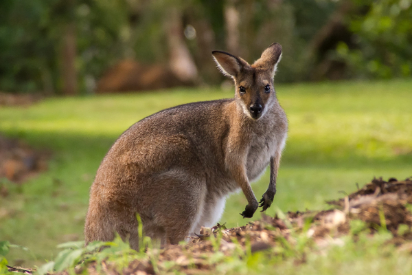
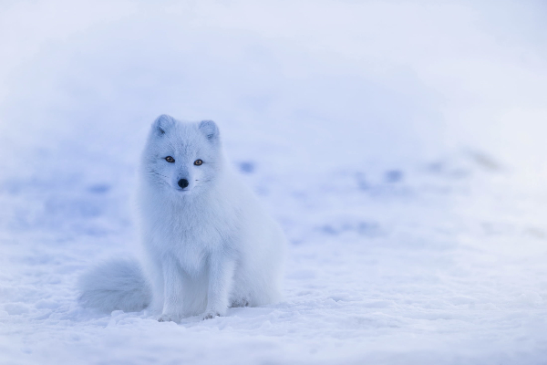
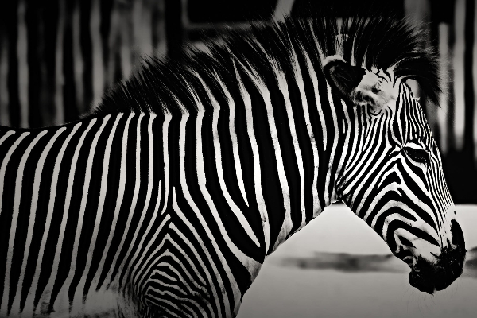

The giraffe (Giraffa) is an African artiodactyl mammal, the tallest
living terrestrial animal and the largest ruminant. The giraffe has
intrigued various ancient and modern cultures for its peculiar
appearance, and has often been featured in paintings, books, and
cartoons. It is classified by the International Union for Conservation
of Nature (IUCN) as vulnerable to extinction and has been extirpated
from many parts of its former range. Giraffes are still found in
numerous national parks and game reserves, but estimates as of 2016
indicate there are approximately 97,500 members of Giraffa in the
wild. More than 1,600 were kept in zoos in 2010.

Green treefrogs reach 1 ¼ to 2 ½ inches long. Females tend to be
larger than males. Their color varies from bright green to greenish
gray or yellow green on back, with white or cream-colored stomach.
Yellow or white stripes may run down the sides of its body, and gold
spots may appear on its back. Sticky toe pads on its long toes are
used for gripping.

Leopards are larger than a house cat, but leopards are the smallest
members of the large cat category. Leopards are solitary creatures
that only spend time with others when they are mating or raising
young. They are also nocturnal and spend their nights hunting instead
of sleeping. Compared to other wild cats, the leopard has relatively
short legs and a long body with a large skull. Its fur is marked with
rosettes. It is similar in appearance to the jaguar (Panthera onca),
but has a smaller, lighter physique, and its rosettes are generally
smaller, more densely packed and without central spots.

Owls are birds from the order Strigiformes, which includes over 200
species of mostly solitary and nocturnal birds of prey typified by an
upright stance, a large, broad head, binocular vision, binaural
hearing, sharp talons, and feathers adapted for silent flight.
Exceptions include the diurnal northern hawk-owl and the gregarious
burrowing owl.

Gulls, or colloquially seagulls, are seabirds of the family Laridae in
the suborder Lari. Gulls are typically medium to large birds, usually
grey or white, often with black markings on the head or wings. They
typically have harsh wailing or squawking calls; stout, longish bills;
and webbed feet. Most gulls are ground-nesting carnivores which take
live food or scavenge opportunistically, particularly the Larus
species.

A vulture is a bird of prey that scavenges on carrion. A particular
characteristic of many vultures is a bald, unfeathered head. This bare
skin is thought to keep the head clean when feeding, and also plays an
important role in thermoregulation. Vultures have been observed to
hunch their bodies and tuck in their heads in the cold, and open their
wings and stretch their necks in the heat. They also urinate on
themselves as a means of cooling their bodies

A wallaby is a small or middle-sized macropod native to Australia and
New Guinea, with introduced populations in New Zealand,[1] Hawaii, the
United Kingdom and other countries. They belong to the same taxonomic
family as kangaroos and sometimes the same genus, but kangaroos are
specifically categorised into the four largest species of the family.
The term "wallaby" is an informal designation generally used for any
macropod that is smaller than a kangaroo or a wallaroo that has not
been designated otherwise.

The Arctic fox (Vulpes lagopus), also known as the white fox, polar
fox, or snow fox, is a small fox native to the Arctic regions of the
Northern Hemisphere and common throughout the Arctic tundra biome. It
is well adapted to living in cold environments, and is best known for
its thick, warm fur that is also used as camouflage. Arctic foxes must
endure a temperature difference of up to 90–100 °C (160–180 °F)
between the external environment and their internal core temperature.
To prevent heat loss, the Arctic fox curls up tightly tucking its legs
and head under its body and behind its furry tail.

Zebras (subgenus Hippotigris) are African equines with distinctive
black-and-white striped coats. Zebras are primarily grazers and can
subsist on lower-quality vegetation. They are preyed on mainly by
lions and typically flee when threatened but also bite and kick.
Zebras' dazzling stripes make them among the most recognisable
mammals. They have been featured in art and stories in Africa and
beyond.